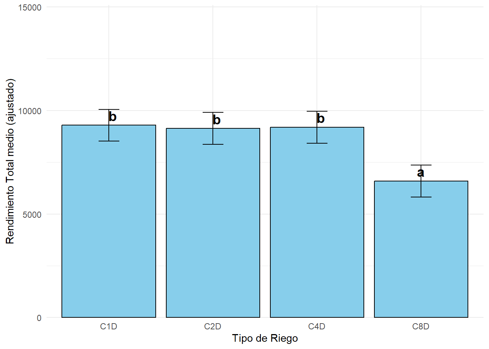
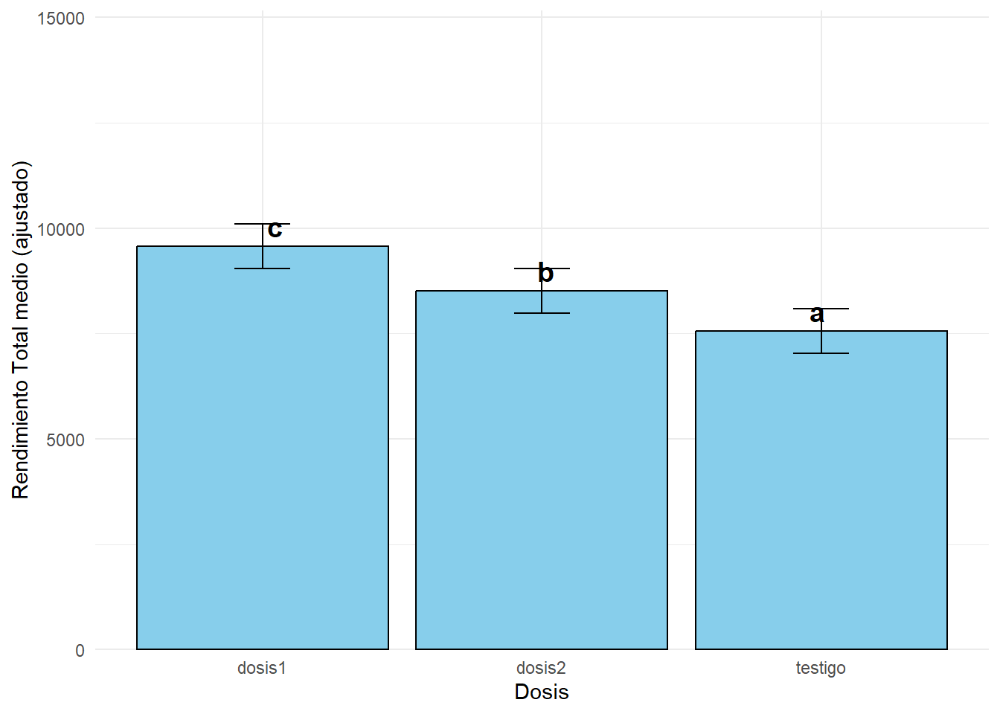
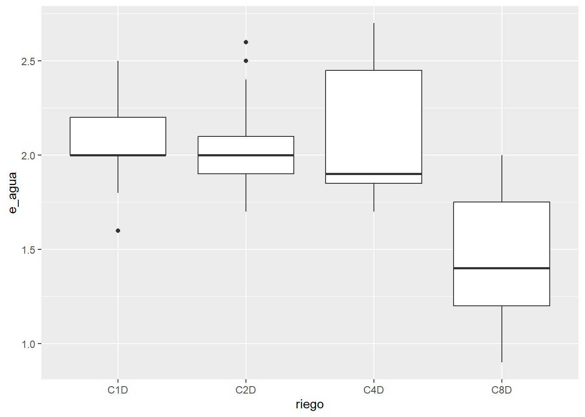
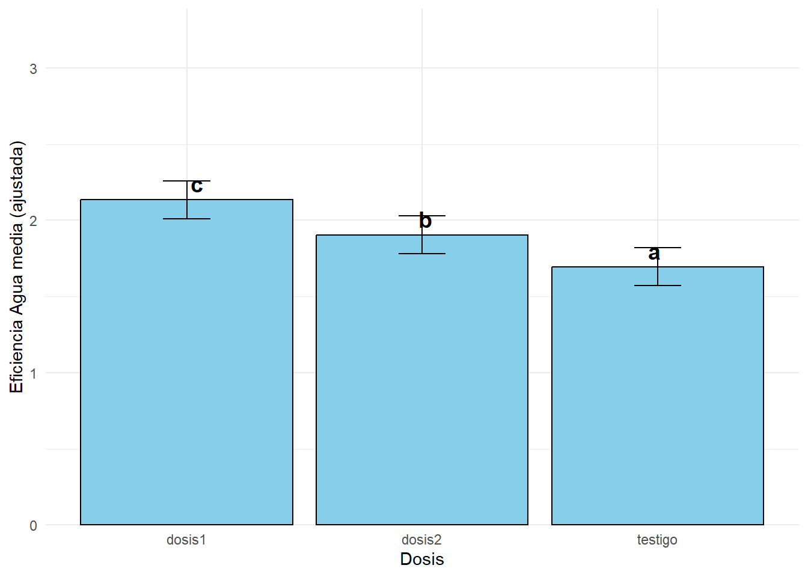
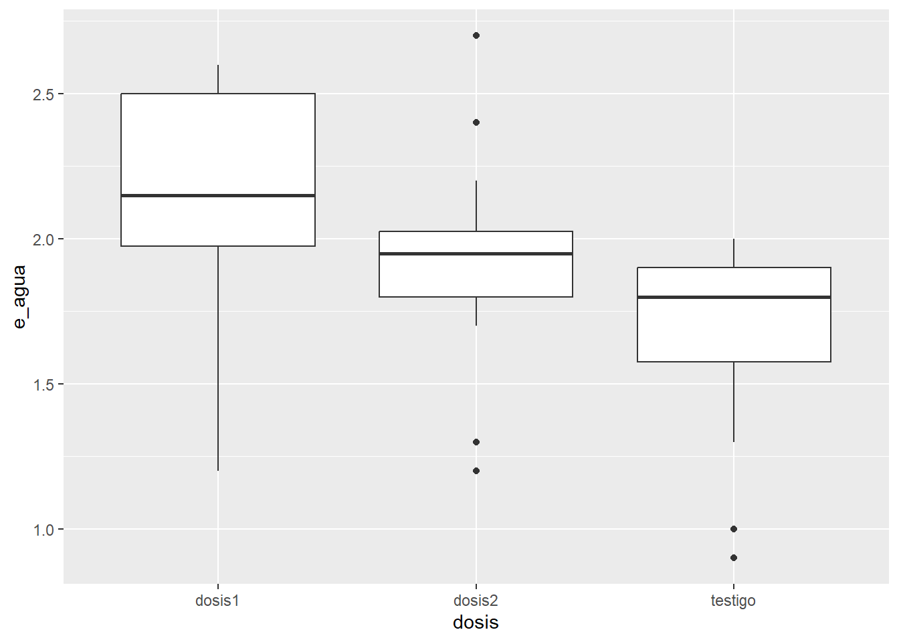
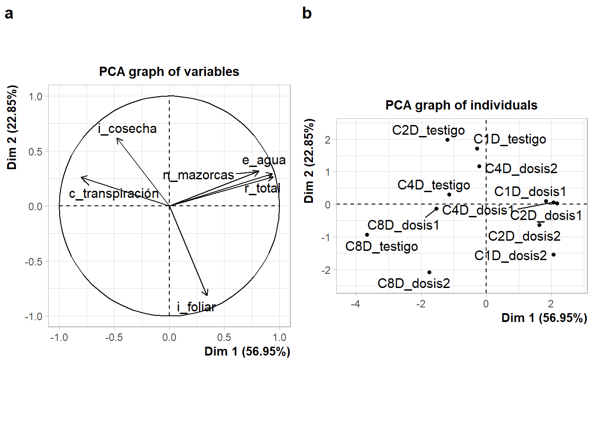

Crear mi diseño experimental => modelo estadístico
Colectar los datos
Importar y verificar los factores.
Análisis de Variancia
Comparación de medias
Gráfico
Librerias
library(tidyverse)
── Attaching core tidyverse packages ──────────────────────── tidyverse 2.0.0 ──
✔ dplyr 1.1.4 ✔ readr 2.1.5
✔ forcats 1.0.1 ✔ stringr 1.5.2
✔ ggplot2 4.0.0 ✔ tibble 3.3.0
✔ lubridate 1.9.4 ✔ tidyr 1.3.1
✔ purrr 1.1.0
── Conflicts ────────────────────────────────────────── tidyverse_conflicts() ──
✖ dplyr::filter() masks stats::filter()
✖ dplyr::lag() masks stats::lag()
ℹ Use the conflicted package (<http://conflicted.r-lib.org/>) to force all conflicts to become errors
library(googlesheets4)library(Matrix)
Adjuntando el paquete: 'Matrix'
The following objects are masked from 'package:tidyr':
expand, pack, unpack
library(lme4)library(dplyr)library(emmeans)
Warning: package 'emmeans' was built under R version 4.5.2
Welcome to emmeans.
Caution: You lose important information if you filter this package's results.
See '? untidy'
library(multcompView)library(multcomp)
Cargando paquete requerido: mvtnorm
Cargando paquete requerido: survival
Cargando paquete requerido: TH.data
Cargando paquete requerido: MASS
Adjuntando el paquete: 'MASS'
The following object is masked from 'package:dplyr':
select
Adjuntando el paquete: 'TH.data'
The following object is masked from 'package:MASS':
geyser
library(purrr)library(ggplot2)library(cowplot)
Adjuntando el paquete: 'cowplot'
The following object is masked from 'package:lubridate':
stamp
library(FactoMineR)library(factoextra)
Welcome! Want to learn more? See two factoextra-related books at https://goo.gl/ve3WBa
library(GGally)
Adjuntando el paquete: 'GGally'
The following object is masked from 'package:emmeans':
pigs
NOTE: Results may be misleading due to involvement in interactions
cld(emm_riego, Letters = letters)
riego emmean SE df lower.CL upper.CL .group
C8D 1.09 0.0349 11.9 1.02 1.17 a
C4D 1.21 0.0349 11.9 1.13 1.29 b
C2D 1.31 0.0349 11.9 1.24 1.39 c
C1D 1.33 0.0349 11.9 1.26 1.41 c
Results are averaged over the levels of: dosis
Degrees-of-freedom method: kenward-roger
Confidence level used: 0.95
P value adjustment: tukey method for comparing a family of 4 estimates
significance level used: alpha = 0.05
NOTE: If two or more means share the same grouping symbol,
then we cannot show them to be different.
But we also did not show them to be the same.
Gráfico barras con letras de comparación de medias para riego
emm_riego <-emmeans(md, ~ riego)
NOTE: Results may be misleading due to involvement in interactions
NOTE: Results may be misleading due to involvement in interactions
cld(emm_riego1, Letters = letters)
riego emmean SE df lower.CL upper.CL .group
C8D 6595 288 25.3 6003 7186 a
C2D 9128 288 25.3 8536 9720 b
C4D 9190 288 25.3 8598 9782 b
C1D 9283 288 25.3 8691 9875 b
Results are averaged over the levels of: dosis
Degrees-of-freedom method: kenward-roger
Confidence level used: 0.95
P value adjustment: tukey method for comparing a family of 4 estimates
significance level used: alpha = 0.05
NOTE: If two or more means share the same grouping symbol,
then we cannot show them to be different.
But we also did not show them to be the same.
Gráfico barras con letras de comparación de medias para riego
emm_riego1 <-emmeans(md1, ~ riego)
NOTE: Results may be misleading due to involvement in interactions
Note: adjust = "tukey" was changed to "sidak"
because "tukey" is only appropriate for one set of pairwise comparisons
df_letras <-as.data.frame(letras)ggplot(df_letras, aes(x = riego, y = emmean)) +geom_col(fill ="skyblue", color ="black") +geom_errorbar(aes(ymin = lower.CL, ymax = upper.CL), width =0.2) +geom_text(aes(label = .group, y = emmean +max(emmean)*0.05), size =5, fontface ="bold") +labs(x ="Tipo de Riego", y ="Rendimiento Total medio (ajustado)") +theme_minimal() +scale_y_continuous(expand =expansion(mult =c(0, 0.5)))

Diagrama de cajas para riego
ggplot(fb, aes(x = riego, y = r_total)) +geom_boxplot()

Para dosis
emm_dosis1 <-emmeans(md1, ~ dosis)
NOTE: Results may be misleading due to involvement in interactions
cld(emm_dosis1, Letters = letters)
dosis emmean SE df lower.CL upper.CL .group
testigo 7559 254 17.9 7025 8093 a
dosis2 8515 254 17.9 7981 9049 b
dosis1 9573 254 17.9 9039 10107 c
Results are averaged over the levels of: riego
Degrees-of-freedom method: kenward-roger
Confidence level used: 0.95
P value adjustment: tukey method for comparing a family of 3 estimates
significance level used: alpha = 0.05
NOTE: If two or more means share the same grouping symbol,
then we cannot show them to be different.
But we also did not show them to be the same.
Gráfico barras con letras de comparación de medias para dosis
ggplot(as.data.frame(cld(emm_dosis1, Letters = letters)), aes(x = dosis, y = emmean)) +geom_col(fill ="skyblue", color ="black") +geom_errorbar(aes(ymin = lower.CL, ymax = upper.CL), width =0.2) +geom_text(aes(label = .group, y = emmean +max(emmean) *0.05), size =5, fontface ="bold") +labs(x ="Dosis", y ="Rendimiento Total medio (ajustado)") +theme_minimal() +scale_y_continuous(expand =expansion(mult =c(0, 0.5)))
Diagrama de cajas para dosis
ggplot(fb, aes(x = dosis, y = r_total)) +geom_boxplot()
NOTE: Results may be misleading due to involvement in interactions
cld(emm_riego2, Letters = letters)
riego emmean SE df lower.CL upper.CL .group
C8D 1.45 0.0668 24 1.32 1.59 a
C2D 2.04 0.0668 24 1.90 2.18 b
C4D 2.07 0.0668 24 1.94 2.21 b
C1D 2.08 0.0668 24 1.94 2.22 b
Results are averaged over the levels of: dosis
Degrees-of-freedom method: kenward-roger
Confidence level used: 0.95
P value adjustment: tukey method for comparing a family of 4 estimates
significance level used: alpha = 0.05
NOTE: If two or more means share the same grouping symbol,
then we cannot show them to be different.
But we also did not show them to be the same.
Gráfico barras con letras de comparación de medias para riego
emm_riego2 <-emmeans(md2, ~ riego)
NOTE: Results may be misleading due to involvement in interactions
Note: adjust = "tukey" was changed to "sidak"
because "tukey" is only appropriate for one set of pairwise comparisons
df_letras <-as.data.frame(letras)ggplot(df_letras, aes(x = riego, y = emmean)) +geom_col(fill ="skyblue", color ="black") +geom_errorbar(aes(ymin = lower.CL, ymax = upper.CL), width =0.2) +geom_text(aes(label = .group, y = emmean +max(emmean)*0.05), size =5, fontface ="bold") +labs(x ="Tipo de Riego", y ="Eficiencia Agua media (ajustada)") +theme_minimal() +scale_y_continuous(expand =expansion(mult =c(0, 0.5)))
Diagrama de cajas
ggplot(fb, aes(x = riego, y = e_agua)) +geom_boxplot()

Para dosis
emm_dosis2 <-emmeans(md2, ~ dosis)
NOTE: Results may be misleading due to involvement in interactions
cld(emm_dosis2, Letters = letters)
dosis emmean SE df lower.CL upper.CL .group
testigo 1.70 0.0593 16.9 1.57 1.82 a
dosis2 1.90 0.0593 16.9 1.78 2.03 b
dosis1 2.13 0.0593 16.9 2.01 2.26 c
Results are averaged over the levels of: riego
Degrees-of-freedom method: kenward-roger
Confidence level used: 0.95
P value adjustment: tukey method for comparing a family of 3 estimates
significance level used: alpha = 0.05
NOTE: If two or more means share the same grouping symbol,
then we cannot show them to be different.
But we also did not show them to be the same.
Gráfico barras con letras de comparación de medias para dosis
ggplot(as.data.frame(cld(emm_dosis2, Letters = letters)), aes(x = dosis, y = emmean)) +geom_col(fill ="skyblue", color ="black") +geom_errorbar(aes(ymin = lower.CL, ymax = upper.CL), width =0.2) +geom_text(aes(label = .group, y = emmean +max(emmean) *0.05), size =5, fontface ="bold") +labs(x ="Dosis", y ="Eficiencia Agua media (ajustada)") +theme_minimal() +scale_y_continuous(expand =expansion(mult =c(0, 0.5)))

Diagrama de cajas
ggplot(fb, aes(x = dosis, y = e_agua)) +geom_boxplot()

Análisis multivariado
Gráfico de variables: Representa cómo las diferentes variables numéricas (n_mazorcas, r_total, e_agua, etc.) contribuyen a los componentes principales. Variables cercanas entre sí están correlacionadas positivamente, mientras que las opuestas están correlacionadas negativamente. Las más alejadas del centro tienen mayor contribución al PCA.
Gráfico de individuos: Muestra cómo los tratamientos (combinaciones riego × dosis) se distribuyen en el espacio de componentes principales. Tratamientos cercanos tienen respuestas similares en todas las variables medidas, mientras que los alejados tienen perfiles diferentes.
El análisis revela patrones multivariados: qué variables se comportan de forma similar, qué tratamientos producen respuestas equivalentes, y cómo la interacción riego-dosis afecta múltiples variables simultáneamente.
Warning: ggrepel: 5 unlabeled data points (too many overlaps). Consider
increasing max.overlaps

Gráfico de correlación de variables cuantitativas
El gráfico de correlación muestra la matriz de correlaciones entre las variables numéricas del estudio (n_mazorcas, r_total, e_agua, etc.).
Cada celda representa el coeficiente de correlación entre dos variables:
Valores cercanos a 1: correlación positiva fuerte (mismo color intenso)
Valores cercanos a 0: poca o ninguna correlación (color claro)
Valares cercanos a -1: correlación negativa fuerte (color intenso opuesto)
Los colores permiten identificar rápidamente qué variables están relacionadas: - Variables que aumentan o disminuyen juntas tienen correlaciones positivas - Variables con comportamientos opuestos tienen correlaciones negativas
Ayuda a identificar redundancia entre variables y patrones de respuesta conjunto antes de análisis más complejos como PCA.